Lageplan · Gruppen · Kameras

K1 Übersicht SO · K2 Augenhöhe vom Weg → Stadthaus · K3 Seite West, Silhouette. K4 = Nahaufnahme Fuß an G1.
Frei bleiben: Platz vor dem Stadthaus mit den Autos (Freifläche), beide Wege.
Frei bleiben: Platz vor dem Stadthaus mit den Autos (Freifläche), beide Wege.
Geschichte
Schräge Vorstadt: Das Stadthaus ist das Ziel, davor parken die Autos. Die Anwohner haben hinter dem Haus einen kleinen Herbstpark gepflanzt, Schirmbäume mit orangen Kronen auf lila Stämmen. Am Abzweig steht eine Baumgruppe als Wegmarke, magentafarbene Felsen an der Kante erinnern an die Wackeltürme. Gefühl: Spätsommer in der Vorstadt.
Farbkonzept 60 / 30 / 10
60 % Petrol · Boden, Hügel #2f8f83; Gras = Boden hell, nicht Laub
30 % Orange · Kronen #f08a2c / #f5b041 auf lila Stämmen #6b4a8a
10 % Magenta · Felsen, Steine (Joyride-Wackeltürme)
Hell-Dunkel: Orange Kronen rahmen das Stadthaus links und rechts, davor bleibt der Platz petrol und ruhig.
Gruppen-Rezepte (Rule of Three, Ort-Begründung)
| G1 | Herbstpark West Landmarke Anker: Schirmbaum ×1,3 Stützen: Herbstbirke ×2 · Busch Akzent: Magenta-Stein |
| G2 | Hinterhof Ost Landmarke Anker: Laubbaum ×1,2 Stützen: Herbstbirke · Busch breit Akzent: Blumen |
| G3 | Wegmarke am Abzweig Weg Anker: Laubbaum ×1,2 Stützen: Busch ×2 Akzent: Magenta-Stein |
| G4 | Garten Südwest Kern Anker: Schirmbaum ×1,2 Stützen: Busch · Herbstbirke 0,8 Akzent: Blumen |
Arten · Bild aus lineup.html · Zielhöhe in H
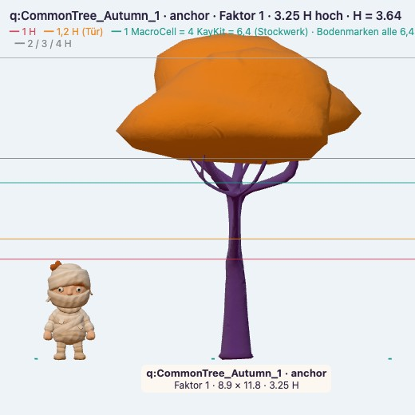
Schirmbaum3,25 H · Anker Park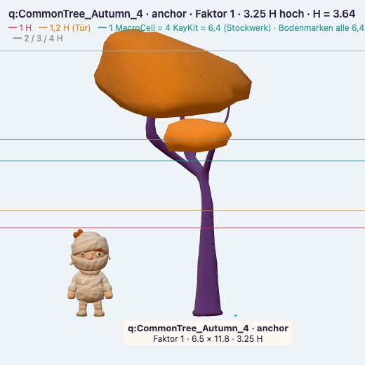
Laubbaum3,25 H · Anker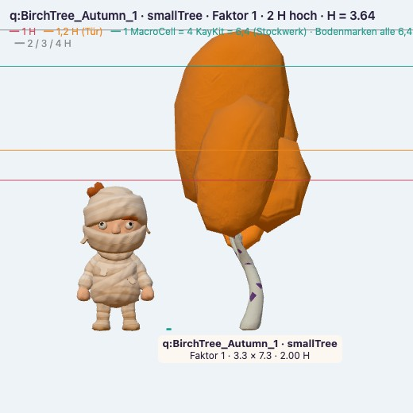
Herbstbirke2 H · Stütze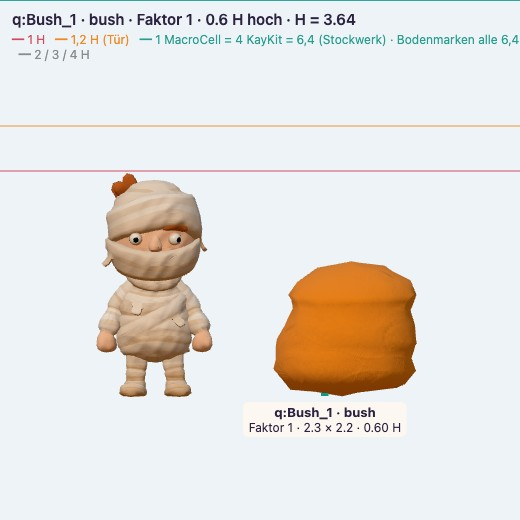
Busch0,6 H · Stütze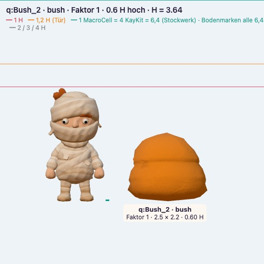
Busch breit0,6 H · Stütze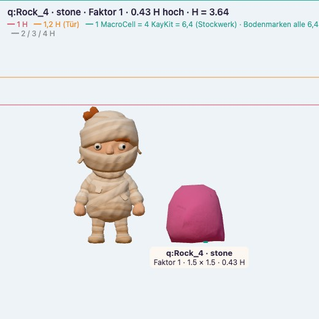
Magenta-Stein0,43 H · Akzent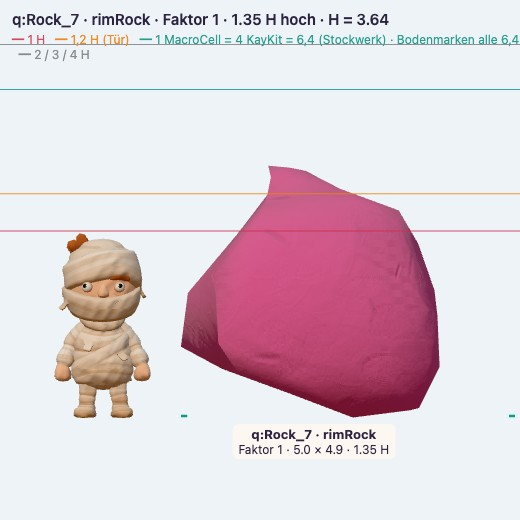
Magenta-Fels1,35 H · Rand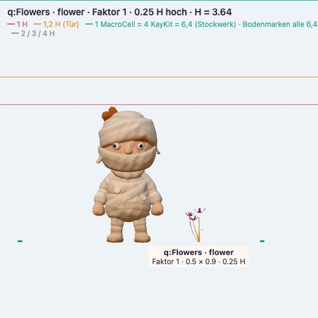
Blumen0,25 H · Akzent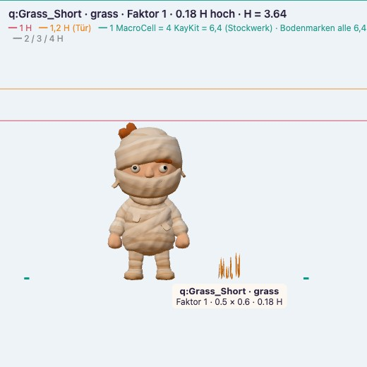
Gras0,18 H · Fuß-ÜberlappungReferenz
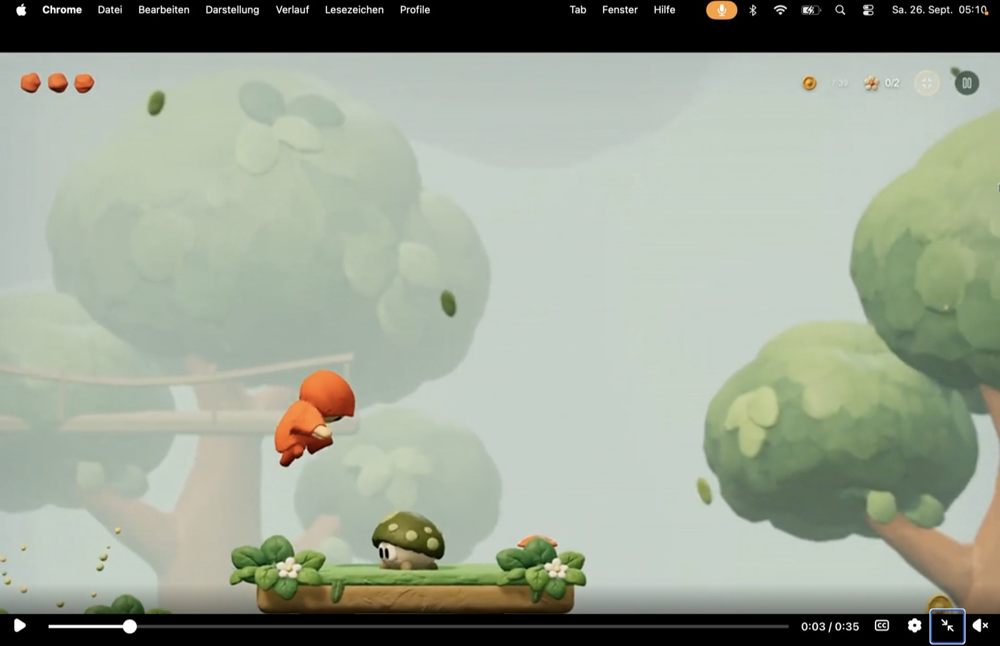
Claybound: runde Knetkronen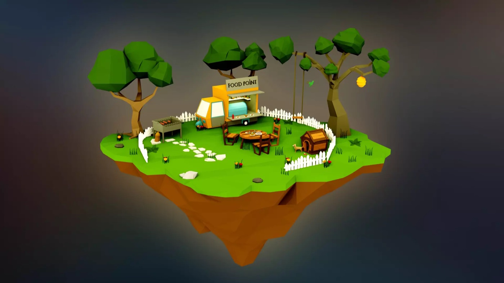
Bäume rahmen das Ziel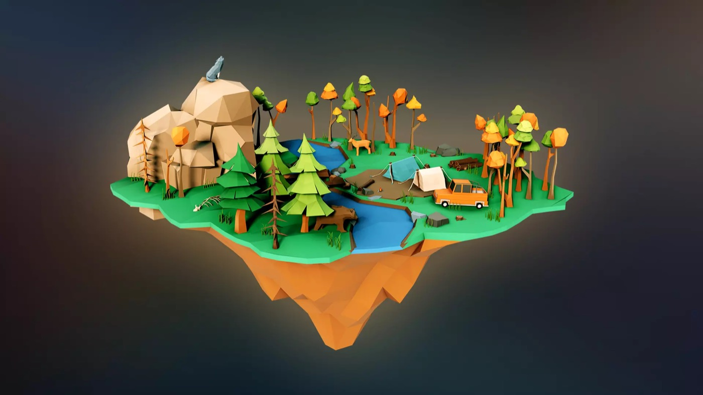
HerbstkronenKit-Look: facettiert → rund geknetet (gleiche Dreiecke)
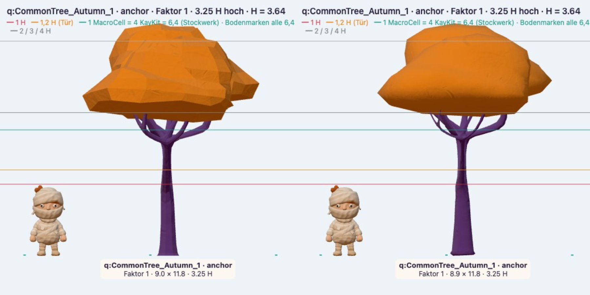